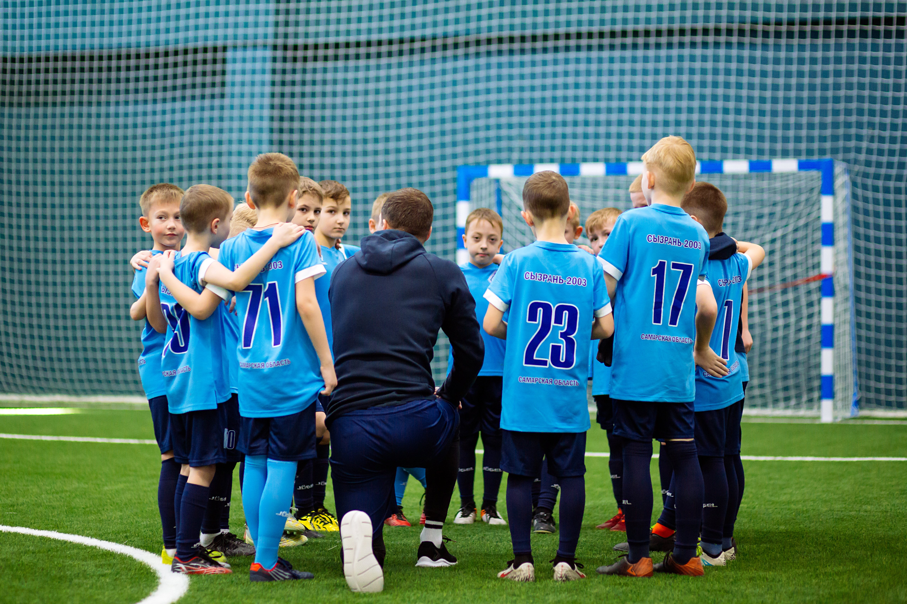
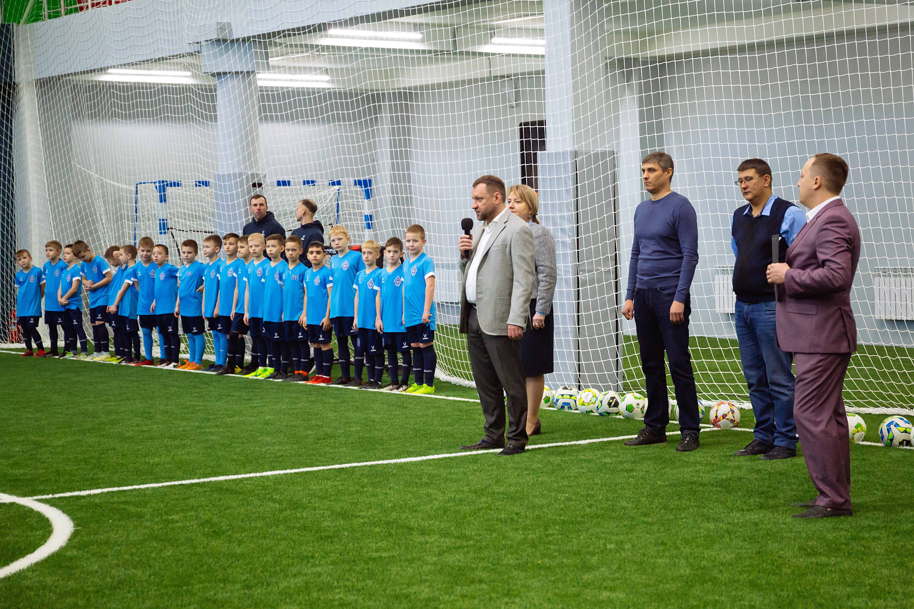

«Земский Банк» выступил спонсором проекта «Детский футбольный центр»
В Сызрани прошла торжественная церемония открытия первого Детского футбольного центра.
Спонсором проекта «Детский футбольный центр» выступил Земский Банк.
В распоряжении юных футболистов для полноценного развития спортивных навыков предлагается современное оборудование и инвентарь, футбольное поле с высококачественным искусственным покрытием, комфортабельные раздевалки, а для родителей организована удобная зона ожидания с фуд-кортом. Занятия с будущими футбольными звездами будет проводить квалифицированный тренерский состав по системе, выстроенной на основе профессиональных методик, которые разработали специалисты городской футбольной федерации.Кроме того, на текущий момент ведется работа по внедрению интерактивных зон на основе современных технологий. В частности, установка уникального инновационного тренажера нового поколения для дополнительных тренировок футболистов — Smart Arena 360. Этот футбольный тренажер поможет выйти юным футболистам на новый уровень, усовершенствовать технические и когнитивные навыки игроков, ставящих перед собой цели в профессиональном спорте. За 10-минутную сессию на арене интерактивной платформы игроки делают порядка 300 передач, совершая более 500 касаний мяча — столько же технических действий делает футболист за 90 минут командной тренировки. Но на футбольном тренажере игрок не перегружает себя излишней беговой нагрузкой, поскольку все упражнения выполнятся с мячом у ноги.
В церемонии открытия приняли участие заместитель главы администрации г.о. Сызрани по социальным вопросам Татьяна Журкина, председатель Самарской Губернской Думы, Член комитета по культуре и спорту молодёжной политики и туризма Самарской Губернской Думы Михаил Усов, председатель сызранской федерации футбола Александр Кочененко, а также спонсор Детского футбольного центра, председатель правления ООО «Земский банк», председатель РОО «Самарская областная федерация футбола» Максим Симонов.

